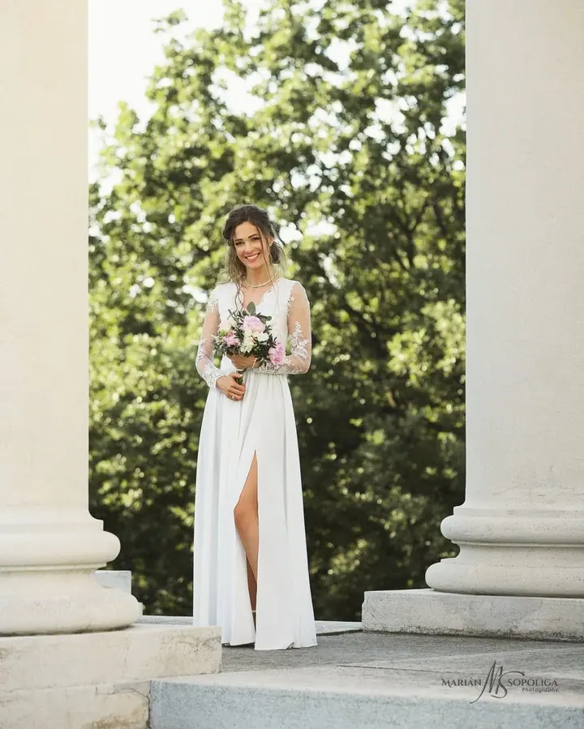
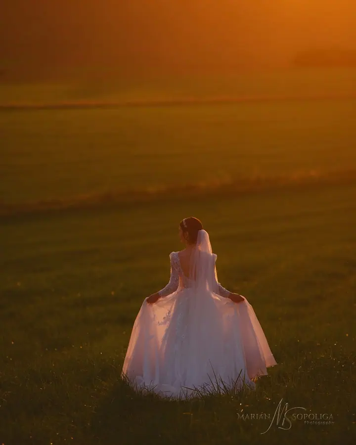
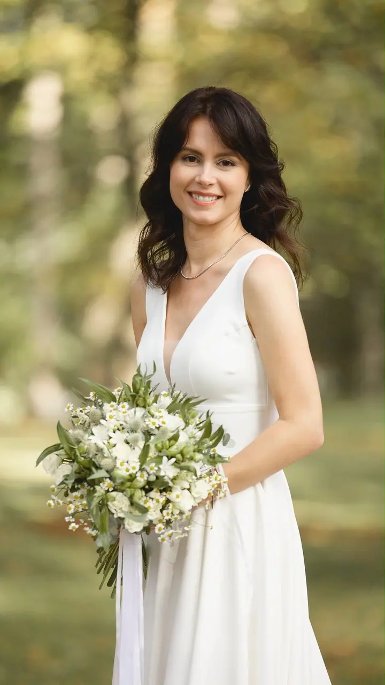
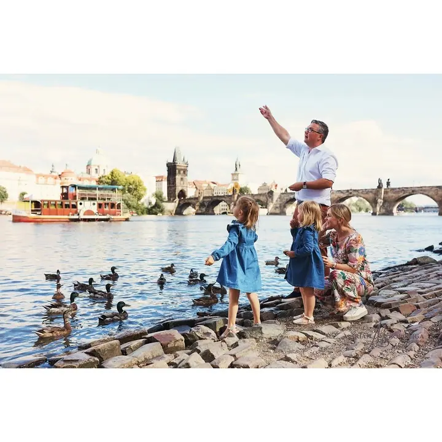
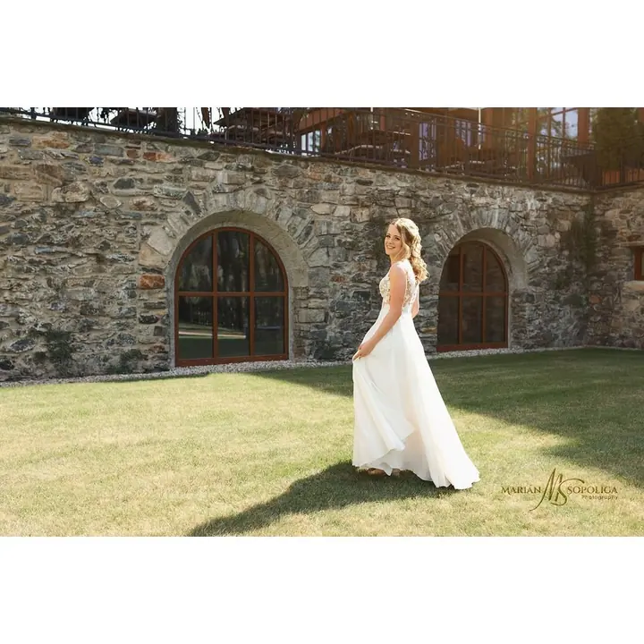
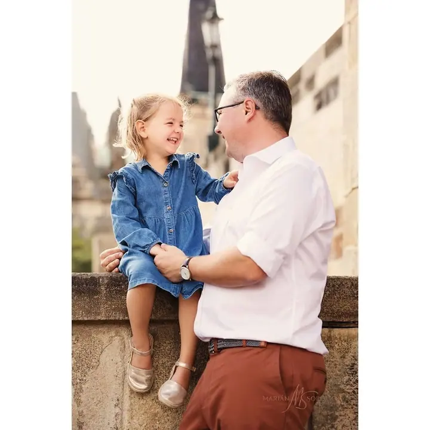

Svatební fotografie
Elegantní a nadčasové svatební fotografie, které věrně vyprávějí váš příběh. Fotím nenápadně v reportážním stylu a ke svatbě patří i předsvatební focení.





Jmenuji se Marián Sopoliga a fotím svatby, páry a rodiny v Praze, Brně, Olomouci i v zahraničí. Zakládám si na eleganci, autenticitě a precizní retuši. Fotky by se podle mě měly stát součástí vašeho domova, ne jen souborem v počítači.
Více o mně
„Každý snímek tvořím s precizností, elegancí a citlivostí, aby odrážel váš jedinečný styl.“
— Marián Sopoliga
Elegantní a nadčasové svatební fotografie, které věrně vyprávějí váš příběh. Fotím nenápadně v reportážním stylu a ke svatbě patří i předsvatební focení.
Focení zamilovaných, zásnubní i předsvatební fotky na místě, které pro vás něco znamená. Jemně a elegantně zachytím vaši přirozenost, upřímně a autenticky.
Nadčasové rodinné fotografie a dětské portréty, převážně v Olomouckém kraji. Před focením poradím s oblečením i lokací, aby děti mohly být samy sebou.
Umělecké portréty a focení teenagerů s trpělivostí a taktem. Chci ukázat, kým jste právě teď.
Jsem umělecký svatební a portrétní fotograf. Vím, že každá svatba je originální příběh, a tak se soustředím na dojaté pohledy, něžné doteky a chvíle radosti, ze kterých se váš den skládá. Fotím nenápadně, abyste si mě během dne skoro nevšimli.
Než přijde velký den, rád se s vámi potkám na předsvatebním focení, ideálně v místě obřadu nebo hostiny. Probereme plány, vyladíme harmonogram a vy si zvyknete na objektiv. V den svatby už budeme spíš přátelé.
Kromě svateb fotím páry, rodiny s dětmi, teenagery a umělecké portréty. Každý výběr fotografií projde mojí pečlivou a citlivou retuší a na přání vám připravím ručně zpracované album, fotoknihu nebo velkoformátový tisk.
Napište nebo zavolejte a probereme vaše představy. Konzultaci zvládneme osobně, telefonicky i online.
Potkáme se na místě obřadu nebo hostiny, doladíme harmonogram a uděláme první společné portréty.
Fotím nenápadně v reportážním stylu, abyste se před objektivem cítili přirozeně a uvolněně.
Vybrané fotky citlivě upravím a předám ve dvou verzích: pro tisk a pro sociální sítě. Na přání připravím ručně zpracované album.
Ano. Fotím svatby po celé republice, například v Brně, Olomouci, Ostravě, Hradci Králové, Pardubicích nebo ve Zlíně, a také v zahraničí.
Vybrané fotografie projdou retuší a dostanete je jako JPEG ve dvou variantách: v plné kvalitě k tisku a optimalizované pro sociální sítě.
Ano. Připravuji ručně dělanou dárkovou krabičku s fotkami na archivním papíru, fotky na plátně a hliníkové desce, fotoalbum i fotoknihu. Vhodný produkt doporučím po konzultaci.
Rád. Před focením poradím s výběrem oblečení a doporučím vhodnou lokaci, aby si to užily děti i rodiče.
info@mariansopoliga.com
Praha · Olomouc · Brno